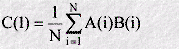
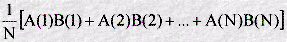
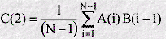
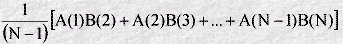
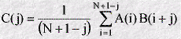

A time dependent correlation function is calculated as follows.
First a molecular dynamics simulation is used to generate a series of time-sequenced values of properties A and B. These form two sets of data (A(i) and B(i)), where the index (i) specifies the time step at which each value was calculated, and it is supposed that i ranges from 1 to some huge number N, which may be many thousand. Such a set is usually called an array, and can be thought of as a long column of numbers. A third array (C(i)) can now be defined, which will store the ordered values of the correlation function. The value of the first array element C(1) is defined as:

which means that each array value of A(i) is multiplied by the corresponding value of B(i) for every value in the arrays and the result summed to a single value, which is divided by the number of values N. In other words it is the average value of all the products, given by:

For the next value of the correlation array (C(2)) a similar procedure is followed, except that instead of taking the products of A(i) and B(i) with the same index, the two indices differ by 1:

which is the same as

It is clear that the average is now over (N-1) values, because there is no value corresponding to B(N+1), as B(N) is the last in the list.
Other values of the array C(i) can be constructed in a similar way, by taking the sum of products A(i)B(i+2) to make C(3), A(i)B(i+3) for C(4) and so on. This prescription can be summarised as:

The result of all this arithmetic, (which of course requires a computer!) is a time-ordered array C(i), which represents the correlation function. What can such a function mean?
Clearly the first element C(1) is just the average of the products of A(i) and B(i) taken at the same time. If these two properties have no connection whatsoever and suppose that they may take both positive and negative values (which can always be arranged by subtracting the mean value of A from the instantaneous value A(i), and likewise for B(i)), then the average will result from a sum of random numbers with positive and negative values, which will sum to zero. If, on the other hand, A(i) and B(i) are completely related, then a given value of A(i) would imply a related value of B(i), meaning the product would always have the same sign and the sum would be a large positive or negative number. So a nonzero value of C(1) indicates that there is some relationship between functions A and B. The two functions are then said to be correlated.
What if A and B are related, but there is a time lag between the value of A and the corresponding value of B? In this case the strongest correlation will occur when A(i) is compared with B(i+j), where j represents the time lag. In other words, the correlation shows up strongest in C(j), and not C(1). It follows that if the whole correlation function is constructed (i.e. with all possible values of j considered), it will be seen at a glance whether there is any correlation at all between two functions A and B, and precisely what the time lag of the correlation is. Any correlation of this nature, revealed by the correlation function, is strong evidence for the lagging function being somehow dependent on the leading function.